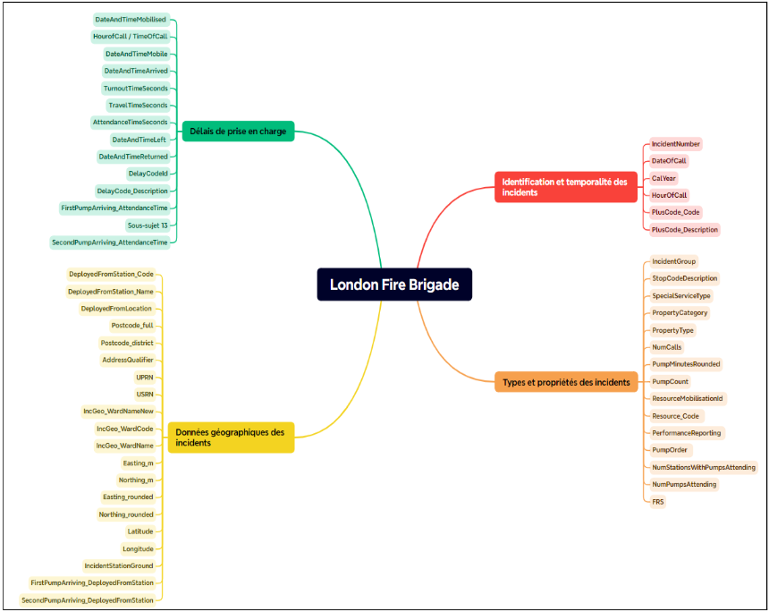
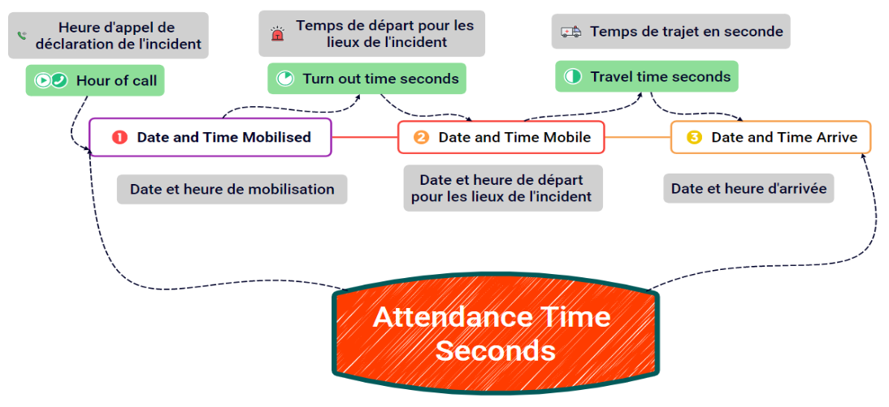

Ce projet a pour but d'analyser et prédire le temps de réponse de la London Fire Brigade. Nous identifierons les facteurs qui influent le plus sur ce temps de réponse et apporterons des préconisations.
Introduction 🚒
J'ai réalisé ce projet dans le cadre de ma formation en Data analyse chez Datascientest.
Ce projet fil rouge m'a permis de mettre en pratique les acquis théoriques vus lors de la formation et de me mettre en situation professionnelle.
La problématique que nous cherchons à résoudre par ce projet est la suivante :
Comment prédire et optimiser le temps d’arrivée sur les lieux des incidents des pompiers de Londres en fonction des
effectifs matériels, humains mis en œuvre, du type d’incidents,
du lieu d’incidents et des données temporelles 🕒 ?
Ainsi, les objectifs du projet sont les suivants :
✅ Permettre d’aider les équipiers pompiers à améliorer leur temps de réponse aux incidents, c'est-à-dire le temps d’arrivée sur les lieux.
✅ Avoir le bon nombre d'équipes déployées selon le type d’incidents et le lieu d’incidents.
Exploration des données 📊
Nous exploitons deux datasets pour notre étude provenant du site de la
London Fire Brigade.
🔥 Mobilisation : contient les détails de chaque incident traité depuis
janvier 2018. Des informations sont fournies sur la date et le
lieu de l'incident ainsi que sur le type d'incident traité. Il compte
713 368 incidents.
🚒 Incident : contient les détails des interventions de chaque
camion de pompiers envoyés sur les lieux d'un incident depuis
janvier 2021 et compte 587 919 interventions.
📍 GPS Station : contient les coordonnées et les spécificités
géographiques des stations de pompier londonienne.
À noter que ces deux jeux de données sont actualisés tous les trimestres.
De la fusion de ces trois jeux de données est formé un nouveau jeu de données nommé "df".
L'exploration du jeu de données a amené la segmentation suivante des
variables qui le composent :

Variable cible 🎯
Notre variable cible est "AttendanceTimeSeconds".
C'est cette variable que nous allons chercher à prédire. Elle représente le
temps total d'intervention et comprend donc le
temps de préparation des équipes et le temps de trajet.
Le temps de retour à la caserne n'est donc pas compris.

Insights Principaux 📊
Notre objectif projet était de
prédire le temps de réponse ⏱️ à des interventions de la brigade des pompiers de Londres,
fonction du nombre d'équipes déployées, du type d’incidents 🔥 et du lieu de l’incident 📍.
Nous sommes effectivement capables de prédire avec un
intervalle de certitude de 26 secondes ⏱️ le temps d'intervention.
Par la sélection des variables explicatives ainsi que les
features importance et grâce aux visualisations,
nous sommes en mesure d'établir les facteurs qui influencent le plus
négativement ce temps d'intervention :
Les caractéristiques de la zone géographique 📍 où se situent la caserne et le lieu de l'incident créent de la
variance dans le temps d'intervention.
Si la zone est très fréquentée (urbaine), les temps s'allongent en raison de la
circulation 🚦.
En périphérie de la ville de Londres, les
temps d'intervention ont tendance à être plus longs.
Une forte concentration des incidents 🔥 est observée en
hyper centre. Malgré cela, seulement
3 casernes peuvent trianguler efficacement les incidents dans ce périmètre.
Le nombre de fausses alarmes est très important, notamment sur les
incidents à forte criticité, mobilisant un
nombre important de pompes 🚒 qui ne peuvent être utilisées sur des incidents à proximité.
L'heure 🕒 à laquelle la brigade est mobilisée influe également sur le
temps d'intervention, avec une
augmentation constatée entre
10h et 18h.
Les motifs de retard incluent le trafic routier 🚗,
les travaux d'urbanisation 🚧, et surtout les
adresses incorrectes, sur lesquelles les équipes peuvent intervenir.
Nos métriques de modélisation 📊 pourront aider le
process métier de réponse aux appels de la brigade.
Lors d'un incident 🔥, si une ou plusieurs équipes doivent intervenir,
la plateforme d’appel 📞 pourra prévoir à
26 secondes près le temps d’arrivée,
rassurant les citoyens et permettant une organisation rapide entre les équipes.
Nettoyage et preprocessing 🧹
L’objectif 🏁 à la fin de cette étape est d’avoir un dataset 📊 prêt pour effectuer des
analyses approfondies et une modélisation 🤖 à l’aide de Machine Learning.
Il s’agit d’un jeu de données 🗂️ avec modèle à apprentissage supervisé car les données sont labellisées.
On cherche à prédire une variable cible identifiée : le temps d’arrivée sur les lieux de l’incident.
La variable cible, étant une variable quantitative, il s’agit d’un problème de régression 📈.
Dans les deux jeux de données “Incidents” et “Mobilisation”, il y a quelques données avec des NaN 🛑,
que nous allons pouvoir transformer de différentes manières :
Ajout d’une nouvelle classe pour les éléments “nuls” mais qui sont en fait “normaux” car non concernés par la variable.
Imputation avec la méthode SimpleImputer 🧮 de stratégie “médiane” sur les valeurs numériques.
Division des dates 📅 en année, mois, jour, jour de la semaine, heure.
Conversion de certaines colonnes en d’autres types.
Utilisation de la méthode bfill sur les variables catégorielles ayant peu de valeurs nulles, ou le mode si la variable comporte beaucoup de valeurs nulles.
Le feature engineering 🔧, avec la création de nouvelles variables corrélées à la variable cible, a permis après plusieurs itérations
d'améliorer les performances du modèle.
Ainsi :
Des variables géographiques 🌍 telles que la distance entre le lieu d'incident et la caserne ont été créées.
L'encodage cyclique 🔄 des variables temporelles et la segmentation par saison et par moment de la journée ont permis une meilleure compréhension par le modèle.
Enfin, un indice de criticité ⚠️ a été déterminé par le nombre de pompes 🚒 envoyées sur le lieu d'incident.
Visualisations 📊
On remarque que le temps d'intervention total n'évolue pas par année. En revanche, on note que le temps d'intervention sur les fausses alarmes 🚨 est aussi conséquent que sur d'autres types d'incidents.
Or des équipes mobilisées 🚒 sur des fausses alarmes ne peuvent l'être sur de véritables incidents.
Il se peut alors que des équipes provenant de casernes plus lointaines soient mobilisées, allongeant ainsi le temps d'intervention.
Le quartier de Westminster est celui qui voit le plus d'interventions 📍.
Il se situe en plein centre-ville, littéralement le cœur de Londres.
On observe sur cette map interactive 🗺️ que Westminster compte 29 901 incidents pour seulement 3 casernes 🚒 qui triangulent le quartier.
On peut imaginer implanter d'autres stations pour absorber le nombre d'incidents dans cette zone et accroître la performance.
On voit ici que les fausses alarmes 🚨 pèsent pour plus de la moitié des incidents.
Une grande majorité d'entre elles sont liées aux alarmes automatiques 🔔 pour lesquelles les pompiers doivent obligatoirement se déplacer ("AFA").
La moyenne des temps d'intervention se situe autour de 300 secondes, soit 5 minutes ⏱️.
Le parti a été pris de conserver les temps d'intervention proches de 0 car, en réalité, les pompiers ne partent pas toujours de la caserne mais peuvent aussi se trouver sur les lieux ou à proximité, notamment en cas de sur-accident.
Les incidents semblent avoir lieu majoritairement en journée 🌞, là où la population est la plus active, ce qui est plutôt cohérent.
Modèles Machine Learning 🔍
Afin de trouver le modèle le plus cohérent et le plus performant,
la démarche fut de commencer par des modèles simples comme la
régression linéaire puis d'aller vers des modèles plus complexes
en fonction de l'évolution des métriques d'évaluation.
Finalement, 3 modèles donnent une performance satisfaisante dont le meilleur d'entre eux,
Elastic Net, détaillé plus en détail les métriques et l'analyse.
À noter que les variables explicatives de type numériques ont été
choisies notamment en fonction de leur corrélation avec la
variable cible, grâce à la heatmap suivante 📊 :
Random Forest 🌲
Modèle populaire pour sa facilité d'interprétation et sa
stabilité. Utilise des arbres de décision
pour des tâches de régression ou de classification.
LASSO (Least Absolute Shrinkage and Selection Operator) est une méthode de
régularisation qui améliore la précision
de prédiction et l'interprétabilité du modèle.
Meilleurs hyperparamètres : alpha = 0.336
Métriques d'évaluation :
R² = 0.879
RMSE = 40.623
MSE = 1650.261
MAE = 27.941
MedAE = 15.87
Elastic Net 🔗
La régularisation Elastic Net combine les techniques
Ridge et Lasso, permettant de
conserver des variables fortement corrélées et d'éviter une
sélectivité excessive.
Le graphique de comparaison des valeurs réelles et prédites montre la relation entre les valeurs observées et celles que le modèle a prédites. La ligne diagonale noire représente l’idéal où les prédictions correspondraient exactement aux valeurs réelles. On peut voir que la majorité des points se regroupent autour de cette ligne, indiquant que le modèle ElasticNet prédit efficacement dans la plupart des cas. Cependant, certains points sont plus dispersés, notamment pour des valeurs élevées ou basses, ce qui signifie que le modèle a plus de mal à capturer les cas extrêmes.
L'histogramme de la distribution des erreurs montre la fréquence des écarts entre les valeurs prédites et réelles. La courbe qui en résulte est centrée autour de zéro, formant une distribution proche d'une courbe en cloche. Cela indique que la plupart des erreurs de prédiction sont petites, un signe positif quant à la performance globale du modèle. Cependant, la présence de barres plus élevées du côté légèrement négatif indique une tendance du modèle à sous-estimer les temps d'intervention dans certains cas, une observation à prendre en compte pour d'éventuelles optimisations.
L’analyse des résidus permet de visualiser comment les erreurs de prédiction (résidus) sont réparties par rapport aux valeurs prédites. Sur ce graphique, la majorité des résidus sont répartis autour de la ligne de zéro, ce qui est un bon signe d’un modèle bien équilibré. Toutefois, on peut observer une certaine dispersion et des valeurs extrêmes négatives, ce qui signale que le modèle sous-estime la variable cible dans certains cas spécifiques. Cette dispersion peut indiquer la présence de facteurs non capturés ou de relations non linéaires entre les variables que le modèle n’a pas complètement prises en compte.
La courbe des résidus cumulés est un outil efficace pour observer la proportion des erreurs accumulées. Dans ce cas, la courbe montre que la majorité des résidus s’accumulent rapidement autour de zéro, ce qui signifie que la plupart des erreurs de prédiction sont faibles. Une telle courbe confirme la précision globale du modèle ElasticNet. Cependant, on remarque que des erreurs plus importantes, bien que rares, sont visibles aux extrémités, indiquant des zones où le modèle pourrait bénéficier d'une optimisation pour mieux gérer ces cas atypiques.